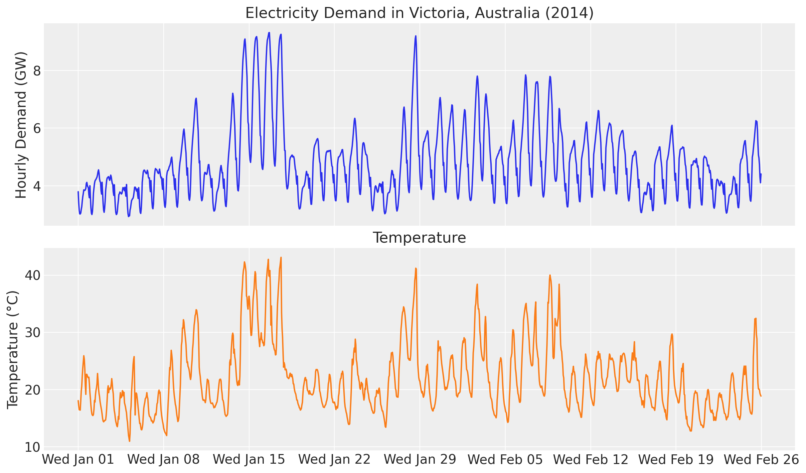
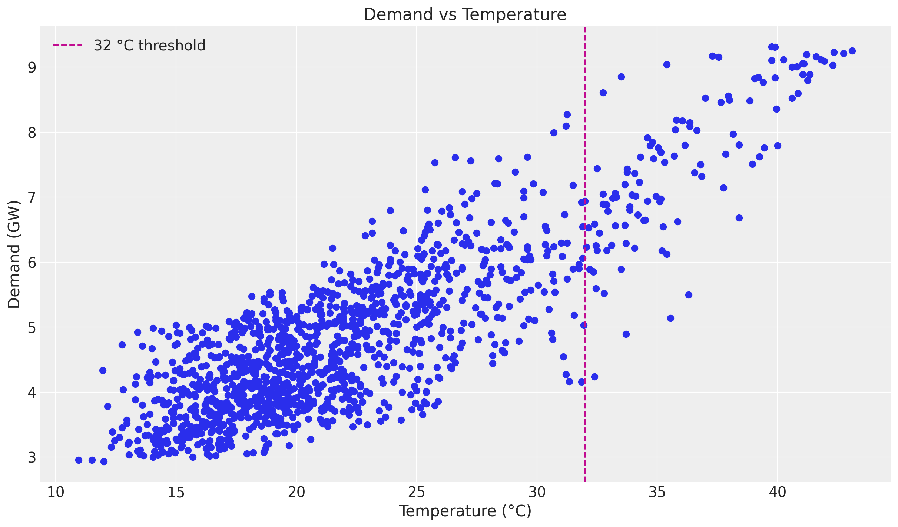
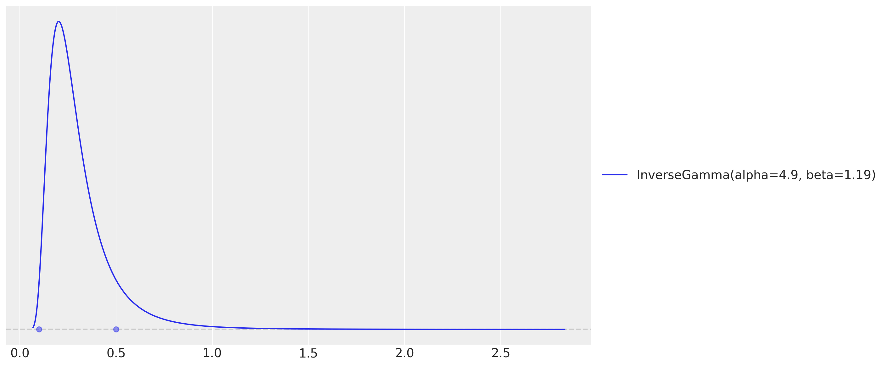
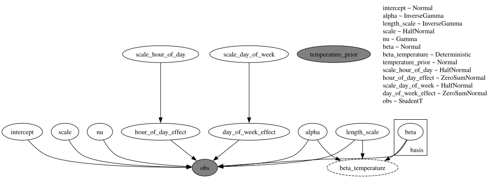
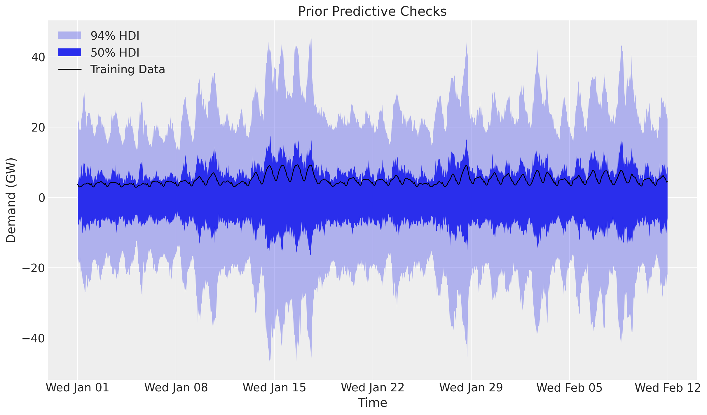
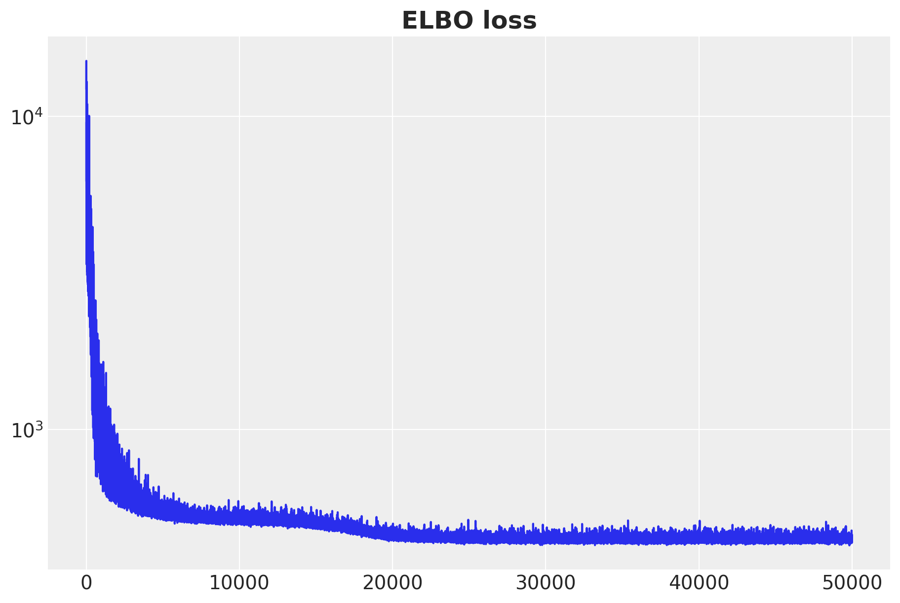
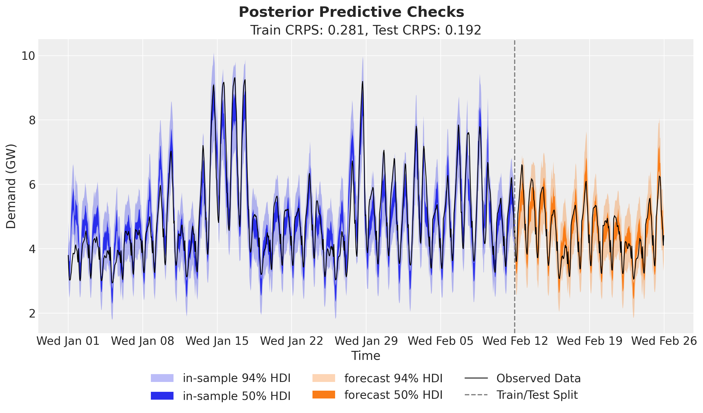
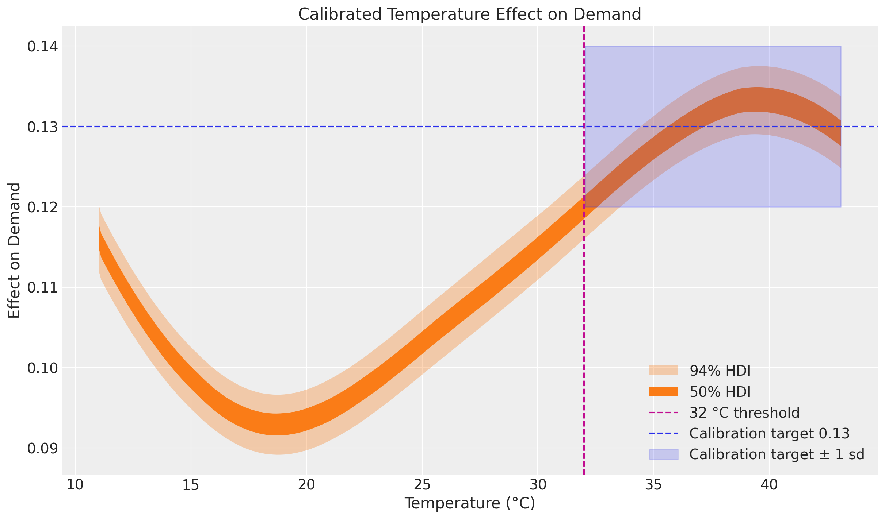

%load_ext autoreload
%autoreload 2
%load_ext jaxtyping
%jaxtyping.typechecker beartype.beartype
%config InlineBackend.figure_format = "retina"
from typing import cast
import arviz as az
import jax.numpy as jnp
import matplotlib.dates as mdates
import matplotlib.pyplot as plt
import numpy as np
import numpyro
import numpyro.distributions as dist
import numpyro.handlers
import pandas as pd
import preliz as pz
import xarray as xr
from jax import random
from numpyro.contrib.hsgp.approximation import hsgp_matern
from numpyro.infer import Predictive, init_to_feasible
from numpyro.infer.autoguide import AutoNormal
from numpyro.optim import Adam
from numpyro_forecast import Forecaster, ForecastingModel, evaluate_forecast
from numpyro_forecast.datasets import load_victoria_electricity
from numpyro_forecast.typing import Array
from numpyro_forecast.util import periodic_repeat
az.style.use("arviz-darkgrid")
plt.rcParams["figure.figsize"] = [12, 7]
plt.rcParams["figure.dpi"] = 100
plt.rcParams["figure.facecolor"] = "white"
numpyro.set_host_device_count(n=4)
rng_key = random.PRNGKey(seed=42)Electricity demand forecasting: prior calibration
Electricity demand forecasting: prior calibration with numpyro_forecast
This notebook ports the blog post Electricity Demand Forecast: Prior Calibration to the numpyro_forecast package. It is a direct continuation of the electricity demand forecasting example: we keep the exact same model (a varying-coefficient temperature effect via a Hilbert Space Gaussian Process, plus hour-of-day and day-of-week seasonality and a Student-t likelihood) and add a single new ingredient, a calibration likelihood.
The idea of calibration is to inject domain knowledge into the model as an extra likelihood term. Suppose that, from experimental or observational data, we believe the effect of temperature on demand stabilizes at a known value once it gets hot enough, say around 0.13 for temperatures above 32 °C. Instead of only encoding this through priors, we observe the latent temperature effect directly in that regime. The obs= argument turns a sample statement into a likelihood, so the posterior now has to explain both the demand data and this belief about the temperature effect at extreme values.
Throughout the package, time lives at axis -2 and the observation dimension at -1, and the forecast horizon is inferred from the covariates being longer than the data.
Prepare notebook
Load data
We load the data through the package helper load_victoria_electricity, which returns the demand series (shape (time, 1), the package convention) and the aligned temperature series. We reference the original comment from the TensorFlow Probability example:
“Victoria electricity demand dataset, as presented at https://otexts.com/fpp2/scatterplots.html and downloaded from https://github.com/robjhyndman/fpp2-package/blob/master/data/elecdaily.rda . This series contains the first eight weeks (starting Jan 1). The original dataset was half-hourly data; here we’ve downsampled to hourly data by taking every other timestep.”
demand, temperature = load_victoria_electricity()
duration = demand.shape[0]
demand_values = np.asarray(demand[:, 0])
temperature_values = np.asarray(temperature)
demand_dates = np.array("2014-01-01", dtype="datetime64[h]") + np.arange(duration)
demand_loc = mdates.WeekdayLocator(byweekday=mdates.WE)
demand_fmt = mdates.DateFormatter("%a %b %d")
print("demand shape:", demand.shape)
print("temperature shape:", temperature.shape)demand shape: (1344, 1)
temperature shape: (1344,)Let’s visualize the data:
fig, ax = plt.subplots(nrows=2, ncols=1, sharex=True, sharey=False, layout="constrained")
ax[0].plot(demand_dates, demand_values, c="C0")
ax[0].set(
title="Electricity Demand in Victoria, Australia (2014)",
ylabel="Hourly Demand (GW)",
)
ax[1].plot(demand_dates, temperature_values, c="C1")
ax[1].set(title="Temperature", ylabel="Temperature (°C)")
ax[1].xaxis.set_major_locator(demand_loc)
ax[1].xaxis.set_major_formatter(demand_fmt)
As in the baseline example, there is a clear positive correlation between temperature and demand, and the relationship is non-linear. The scatter plot below motivates the calibration: at the high end of the temperature range the air-conditioning effect dominates and the per-degree effect on demand settles around a stable value. This is exactly the regime where we will anchor the model with domain knowledge.
fig, ax = plt.subplots()
ax.scatter(temperature_values, demand_values)
ax.axvline(x=32.0, color="C3", linestyle="--", label="32 °C threshold")
ax.legend()
ax.set(title="Demand vs Temperature", xlabel="Temperature (°C)", ylabel="Demand (GW)");
Training and test data
We split the data as in the original example, holding out the last two weeks. We build the exogenous inputs the model needs and pack them into a single covariates array with time at axis -2: the temperature and a day_of_week index. The forecast horizon is inferred later from covariates being longer than the training data.
num_forecast_steps = 24 * 7 * 2 # two weeks
t_train = duration - num_forecast_steps
data_train = demand[:t_train]
data_test = demand[t_train:]
dates_train = demand_dates[:t_train]
dates_test = demand_dates[t_train:]
day_of_week = np.array([d.weekday() for d in demand_dates.astype("datetime64[D]").astype(object)])
covariates = jnp.stack([temperature, jnp.asarray(day_of_week, dtype=jnp.float32)], axis=-1)
covariates_train = covariates[:t_train]
print("data_train shape:", data_train.shape)
print("data_test shape:", data_test.shape)
print("covariates shape:", covariates.shape)data_train shape: (1008, 1)
data_test shape: (336, 1)
covariates shape: (1344, 2)Model specification
The model is the same ForecastingModel as in the baseline example:
- A linear-in-features model predicts demand from temperature and two seasonal effects, hour of day and day of week, both modeled with Zero-Sum Normal distributions.
- A Matérn 5/2 kernel models the temperature effect on demand through the Hilbert Space Gaussian Process (HSGP) approximation from NumPyro.
- The noise scale varies with the temperature, and a Student-t distribution models the residual error.
The only addition is the calibration likelihood. We assume that, from domain knowledge, the effect of temperature on demand for temperatures over 32 °C is stable at around 0.13. We encode this as an extra observation on the latent Gaussian Process coefficient beta_temperature.
The calibration likelihood: index vs mask
In the standalone NumPyro model from the blog post, the calibration term is written by indexing the latent effect at the high-temperature timesteps:
temperature_prior_idx = jnp.where(temperature_training_data > 32.0)[0]
numpyro.sample(
"temperature_prior",
dist.Normal(loc=0.13, scale=0.01),
obs=beta_temperature[temperature_prior_idx],
)In numpyro_forecast a single model handles both training and forecasting, so covariates (and therefore beta_temperature) change length between the two regimes and a fixed integer index does not translate cleanly. The idiomatic, jit-safe equivalent is a masked likelihood: we build a boolean mask from the temperature covariate and apply it with numpyro.handlers.mask.
These two formulations are mathematically identical at training time. numpyro.handlers.mask multiplies each element’s log_prob by the 0/1 mask, so the calibration factor is the sum of Normal(0.13, 0.01).log_prob(beta_temperature[t]) over exactly the timesteps where temperature[t] > 32 °C, the same terms the index version sums. The mask form has static shapes, works for both the in-sample fit and the forecast horizon, and during forecasting is harmless because beta_temperature is deterministic given the posterior and the forecast only reads the forecast site.
GP prior parameters
As in the baseline example, we set the Gaussian Process amplitude and length-scale priors with preliz by assuming both come from an Inverse-Gamma distribution and specifying the support.
# For the amplitude, we set the values inspired on the range of the demand / temperature
# ratio.
_ = pz.maxent(pz.InverseGamma(), lower=0.1, upper=0.5)
# As we want to use the GP to model the temperature effect, we need to set the length
# scale parameter. We expect these effects to be seen at the order of units or tens of
# units, so we expect the length scale to be between 3 and 10.
_ = pz.maxent(pz.InverseGamma(), lower=3, upper=10)
These two maxent calls return the Inverse-Gamma parameters we plug into the model below. The model is identical to the baseline, with the masked calibration likelihood added just after the beta_temperature deterministic site.
class CalibratedElectricityForecaster(ForecastingModel):
"""HSGP temperature effect with hour/day seasonality and a calibration likelihood.
Same model as ``ElectricityForecaster`` in the baseline example, plus a
masked Normal likelihood on the latent temperature effect that anchors it to
a domain-knowledge value in the high-temperature regime.
Parameters
----------
ell
Boundary factor for the HSGP approximation.
m
Number of basis functions for the HSGP approximation.
temp_threshold
Temperature (°C) above which the calibration likelihood is applied.
prior_mean
Domain-knowledge mean of the temperature effect above the threshold.
prior_scale
Scale (uncertainty) of the calibration likelihood.
"""
def __init__(
self,
ell: float = 55.0,
m: int = 25,
temp_threshold: float = 32.0,
prior_mean: float = 0.13,
prior_scale: float = 0.01,
) -> None:
super().__init__()
self.ell = ell
self.m = m
self.temp_threshold = temp_threshold
self.prior_mean = prior_mean
self.prior_scale = prior_scale
def model(self, zero_data: Array | None, covariates: Array) -> None:
"""Define the calibrated electricity-demand forecasting model."""
duration = covariates.shape[-2]
temperature = covariates[..., 0]
day_of_week = covariates[..., 1].astype("int32")
# Intercept.
intercept = numpyro.sample("intercept", dist.Normal(loc=0.0, scale=2.0))
# GP parameters (amplitude and length-scale priors are the preliz maxent fits).
alpha = numpyro.sample("alpha", dist.InverseGamma(concentration=6.66, rate=1.57))
length_scale = numpyro.sample(
"length_scale", dist.InverseGamma(concentration=11.0, rate=62.2)
)
scale_factor = numpyro.sample("scale", dist.HalfNormal(scale=0.5))
# Degrees of freedom for the Student-t likelihood.
nu = numpyro.sample("nu", dist.Gamma(concentration=8.0, rate=3.0))
# Non-linear temperature effect as a Matérn 5/2 HSGP. ``hsgp_matern`` is
# annotated for float hyperparameters, so we cast the sampled scalars.
beta_temperature = hsgp_matern(
x=temperature,
nu=5 / 2,
alpha=cast("float", alpha),
length=cast("float", length_scale),
ell=self.ell,
m=self.m,
)
numpyro.deterministic("beta_temperature", beta_temperature)
# Calibration likelihood: anchor the latent temperature effect to the
# domain-knowledge value where temperature exceeds the threshold. The mask
# keeps only the high-temperature contributions, matching the blog's
# ``beta_temperature[temperature_prior_idx]`` indexing.
high_temp_mask = temperature > self.temp_threshold
with numpyro.handlers.mask(mask=high_temp_mask):
numpyro.sample(
"temperature_prior",
dist.Normal(loc=self.prior_mean, scale=self.prior_scale),
obs=beta_temperature,
)
# Hour-of-day effect, tiled over the horizon with periodic_repeat.
scale_hour_of_day = numpyro.sample("scale_hour_of_day", dist.HalfNormal(scale=0.5))
hour_of_day_effect = numpyro.sample(
"hour_of_day_effect",
dist.ZeroSumNormal(scale=scale_hour_of_day, event_shape=(24,)),
)
hour_of_day_effect = periodic_repeat(hour_of_day_effect, duration, axis=-1)
# Day-of-week effect, indexed by the calendar covariate.
scale_day_of_week = numpyro.sample("scale_day_of_week", dist.HalfNormal(scale=0.5))
day_of_week_effect = numpyro.sample(
"day_of_week_effect",
dist.ZeroSumNormal(scale=scale_day_of_week, event_shape=(7,)),
)
# Expected demand and a temperature-dependent Student-t noise scale.
mu = (
beta_temperature * temperature
+ intercept
+ hour_of_day_effect
+ jnp.take(day_of_week_effect, day_of_week)
)
scale = scale_factor * jnp.sqrt(temperature)
self.predict(dist.StudentT(df=nu, loc=0.0, scale=scale[..., None]), mu[..., None])
model = CalibratedElectricityForecaster()A ForecastingModel instance is itself the NumPyro model callable (covariates, data=None), so we can render its structure directly. The rendered graph shows the new observed temperature_prior node next to the demand obs node.
numpyro.render_model(
model,
model_args=(covariates_train, data_train),
render_distributions=True,
render_params=True,
)
Prior predictive checks
Before we fit the model, let’s visualize the prior predictive distribution. A ForecastingModel instance is a plain NumPyro model callable, so we can hand it to Predictive directly. We adapt the ArviZ band helper used across the other examples (ArviZ removed plot_hdi, so we build the bands with az.hdi).
def hdi_bounds(samples: Array, prob: float) -> tuple[np.ndarray, np.ndarray]:
"""Compute lower and upper HDI bounds of ``samples`` at credible mass ``prob``."""
arr = np.asarray(samples)
da = xr.DataArray(arr[None], dims=["chain", "draw", "time"])
band = az.hdi(da, prob=prob)
return band.sel(ci_bound="lower").values, band.sel(ci_bound="upper").values
prior_predictive = Predictive(model, num_samples=2_000, return_sites=["obs"])
rng_key, rng_subkey = random.split(rng_key)
prior_obs = prior_predictive(rng_subkey, covariates_train)["obs"][..., 0]
fig, ax = plt.subplots()
for prob, band_alpha in [(0.94, 0.3), (0.5, 0.5)]:
lower, upper = hdi_bounds(prior_obs, prob)
ax.fill_between(
dates_train, lower, upper, color="C0", alpha=band_alpha, label=f"{prob * 100:.0f}% HDI"
)
ax.plot(dates_train, np.asarray(data_train[:, 0]), c="black", label="Training Data")
ax.legend()
ax.set(title="Prior Predictive Checks", ylabel="Demand (GW)", xlabel="Time")
ax.xaxis.set_major_locator(demand_loc)
ax.xaxis.set_major_formatter(demand_fmt)
Inference with SVI
We fit the model with stochastic variational inference through the Forecaster class, which wraps the SVI fit and exposes the fitted guide, params and the ELBO losses. As in the baseline example, the posterior is multimodal: the multiplicative beta_temperature * temperature term trades off against the overall level, so a plain AutoNormal can settle on a monotonic temperature effect. We pass a custom guide initialized at a feasible point (init_to_feasible), which reliably recovers the heating-and-cooling (U-shaped) effect. We keep the same optimizer (Adam(step_size=0.005)) and number of steps (50_000) as the blog post.
rng_key, rng_subkey = random.split(rng_key)
guide = AutoNormal(model, init_loc_fn=init_to_feasible)
forecaster = Forecaster(
rng_subkey,
model,
data_train,
covariates_train,
guide=guide,
optim=Adam(step_size=0.005),
num_steps=50_000,
)
fig, ax = plt.subplots(figsize=(9, 6))
ax.plot(forecaster.losses)
ax.set_yscale("log")
ax.set_title("ELBO loss", fontsize=18, fontweight="bold");
The ELBO loss is decreasing as expected.
Posterior predictive checks
We now generate in-sample posterior predictive samples (drawing posterior latents from the fitted guide and pushing them through the model) and forecast the held-out two weeks by calling the forecaster with the full-horizon covariates. We keep the deterministic beta_temperature site to inspect the calibrated temperature effect later.
num_posterior_samples = 5_000
rng_key, rng_subkey = random.split(rng_key)
posterior_samples = forecaster.guide.sample_posterior(
rng_subkey, forecaster.params, sample_shape=(num_posterior_samples,)
)
rng_key, rng_subkey = random.split(rng_key)
train_posterior = Predictive(
model, posterior_samples=posterior_samples, return_sites=["obs", "beta_temperature"]
)(rng_subkey, covariates_train)
rng_key, rng_subkey = random.split(rng_key)
forecast = forecaster(rng_subkey, data_train, covariates, num_samples=num_posterior_samples)Forecast evaluation
We score the train and test forecasts with evaluate_forecast, which reports several metrics at once: CRPS (the Continuous Ranked Probability Score), mean absolute error, root mean squared error, and the empirical coverage of the central 90% prediction interval. The scores should land close to the uncalibrated baseline: the calibration term refines the temperature effect in the high-temperature regime without hurting overall forecast accuracy.
train_metrics = evaluate_forecast(train_posterior["obs"], data_train)
test_metrics = evaluate_forecast(forecast, data_test)
metrics_table = pd.DataFrame({"train": train_metrics, "test": test_metrics})
metrics_table| train | test | |
|---|---|---|
| mae | 0.389226 | 0.264660 |
| rmse | 0.520257 | 0.334297 |
| crps | 0.280324 | 0.192259 |
| coverage | 0.916667 | 0.994048 |
train_obs = train_posterior["obs"][..., 0]
forecast_obs = forecast[..., 0]
fig, ax = plt.subplots()
for prob, band_alpha in [(0.94, 0.2), (0.5, 0.4)]:
lower, upper = hdi_bounds(train_obs, prob)
ax.fill_between(dates_train, lower, upper, color="C0", alpha=band_alpha)
lower, upper = hdi_bounds(forecast_obs, prob)
ax.fill_between(dates_test, lower, upper, color="C1", alpha=band_alpha)
ax.plot(dates_train, np.asarray(train_obs.mean(axis=0)), c="C0", label="Train Posterior Mean")
ax.plot(dates_test, np.asarray(forecast_obs.mean(axis=0)), c="C1", label="Forecast Mean")
ax.plot(dates_train, np.asarray(data_train[:, 0]), c="black", label="Training Data")
ax.plot(dates_test, np.asarray(data_test[:, 0]), c="black", label="Test Data")
ax.axvline(x=dates_train[-1], color="gray", linestyle="--", label="Train/Test Split")
ax.legend(loc="upper center", bbox_to_anchor=(0.5, -0.1), ncol=5)
ax.set(
title=f"Train CRPS: {train_metrics['crps']:.3f}, Test CRPS: {test_metrics['crps']:.3f}",
ylabel="Demand (GW)",
xlabel="Time",
)
ax.xaxis.set_major_locator(demand_loc)
ax.xaxis.set_major_formatter(demand_fmt)
fig.suptitle("Posterior Predictive Checks", fontsize=18, fontweight="bold");
Temperature effect on demand
This is where the calibration shows up. We plot the posterior distribution of the Gaussian Process component beta_temperature against temperature, sorting by temperature so the HDI band reads cleanly. The vertical line marks the 32 °C threshold and the shaded band shows the calibration target of 0.13 ± 0.01 for temperatures above it.
temperature_train = np.asarray(temperature[:t_train])
order = np.argsort(temperature_train)
beta_temperature = train_posterior["beta_temperature"]
prior_mean = model.prior_mean
prior_scale = model.prior_scale
threshold = model.temp_threshold
fig, ax = plt.subplots()
for prob, band_alpha in [(0.94, 0.3), (0.5, 0.5)]:
lower, upper = hdi_bounds(beta_temperature[:, order], prob)
ax.fill_between(
temperature_train[order],
lower,
upper,
color="C1",
alpha=band_alpha,
label=f"{prob * 100:.0f}% HDI",
)
ax.axvline(x=threshold, color="C3", linestyle="--", label=f"{threshold:.0f} °C threshold")
ax.axhline(y=prior_mean, color="C0", linestyle="--", label=f"Calibration target {prior_mean}")
high_temp = (temperature_train[order] > threshold).tolist()
ax.fill_between(
temperature_train[order],
prior_mean - prior_scale,
prior_mean + prior_scale,
where=high_temp,
color="C0",
alpha=0.2,
label="Calibration target ± 1 sd",
)
ax.legend()
ax.set(
title="Calibrated Temperature Effect on Demand",
xlabel="Temperature (°C)",
ylabel="Effect on Demand",
);
The overall shape of the curve resembles the one in the baseline uncalibrated electricity demand example: the temperature effect increases at both extremes of the common temperature range, reflecting the heating and cooling effects noted by Hyndman and Athanasopoulos. The difference is at the high end: the calibration likelihood pulls the estimate for temperatures over 32 °C toward the expected value of 0.13, with noticeably tighter credible bands than in the uncalibrated model.
This opens up nice opportunities to calibrate forecasting models with domain knowledge, possibly extracted from experimental or observational data. The mechanism is general: any latent quantity in a ForecastingModel can be anchored with an extra observed numpyro.sample site, optionally masked to the region where the domain knowledge applies.